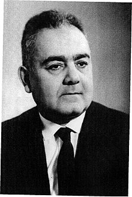

Брауде, Семён Яковлевич
1911-2003

Родился 15 (28 января) 1911 года в Полтаве, окончил Харьковский физико-математический институт (1932).
В 1933—1955 работал в Украинском физико-техническом институте. Принимал активное участие в создании на
базе его радиофизических отделов Института радиофизики и электроники АН УССР. С 1955 работал в Институте
радиофизики и электроники АН УССР (в 1955—1980 — заместитель директора по научной части). Профессор ХПИ
(1946—1956). Академик АН УССР (1969).
Труды Семёна Яковлевича Брауде:
- организована первая на Украине радиоастрономическая обсерватория
- разработана радиоастрономическая аппаратура, в том числе оригинальные радиотелескопы с электрическим управлением лучом, работающие в декаметровом диапазоне
- С помощью созданных под его руководством уникального радиотелескопа УТР-2 и радиоинтерферометра «УРАН» выполнен обширный ряд исследований радиоизлучения небесных объектов: обнаружено низкочастотное радиоизлучение пульсаров, проведены измерения протяженных радиоисточников, изучено распределение радиоизлучения космического фона, исследовано декаметровое излучение тел Солнечной системы и областей поглощения ионизованного водорода, обнаружена первая в декаметровом диапазоне радиолиния — нейтрального азота
- составлен первый каталог радиоисточников и их спектров в декаметровом диапазоне
- проводил также теоретические исследования космического радиоизлучения
| Год |
Открытия: |
| 1955г |
открытие института радиофизики и электроники |
| 1972г |
создал самые большие радиоастрономические системы декаметровых волн, уникальных по своей чувствительности и раздельной пространственной способностью - радиотелескоп УТР-2 и радиоинтерферометры УРАН |
| 1985г |
на базе радиоастраномического сектора ИРЕ создает новый институт радиоастраномии АН УССР |
Источник